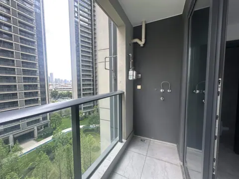
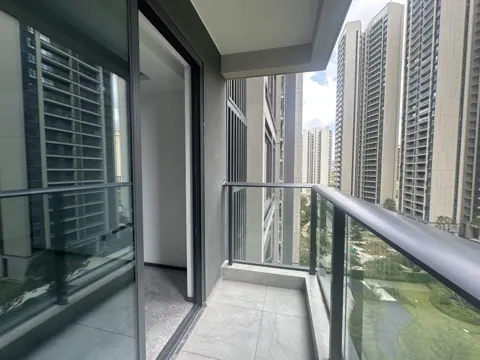
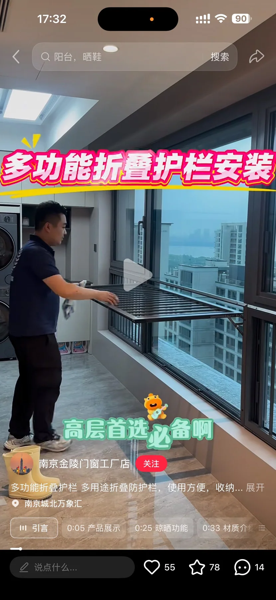
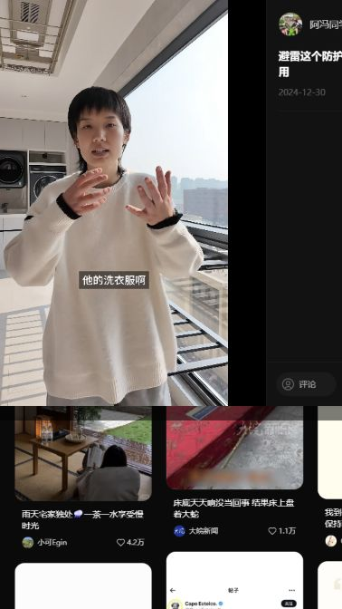
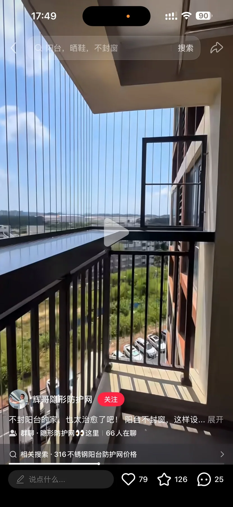
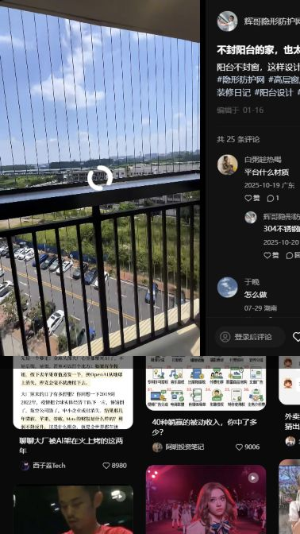
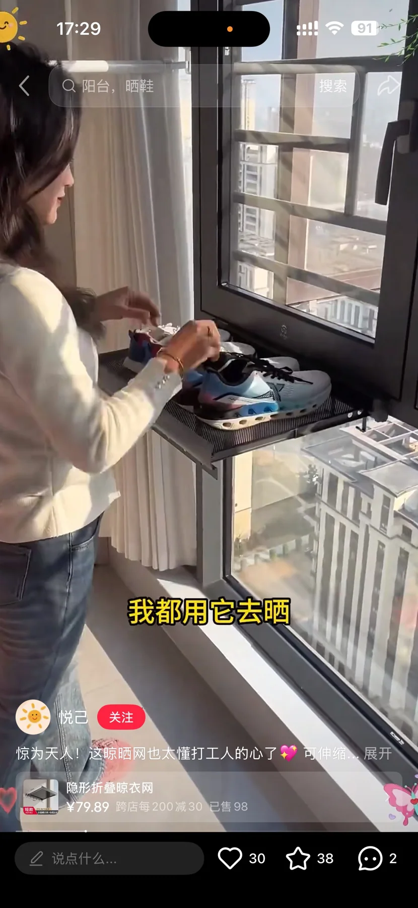

SPACE 04
04 小阳台
现状、需求与预期效果，放在一起讨论。
04 小阳台装修需求
所有尺寸均为参考；施工、定制、开孔和下单以现场实测、实物安装要求及确认图纸为准。列入配置不等于已经购买。
现场实拍

小阳台东侧（燃气入户）

小阳台西侧（晾衣区）
DESIGN INTENT
预期效果
仅展示需求文档中列出的效果图。


功能与布局
- 保留燃气表、冷热水管及推拉门。
- 东侧安排家政设备与宠物设备。
- 西侧作为主要晾晒区，安排宠物饮食、攀爬及工具挂放。
硬装与定制
- 地面与门轨：地面以不抬高、与客厅地砖找平通铺为目标，优先考虑保留原地面基础；推拉门地轨改为铜条，兼顾清洁、适老化及扫地机器人通行，具体铺装工艺现场确认。
- 东侧柜体与包管：设备柜顶部包管并设置活动检修板，中段封闭收纳猫粮、猫砂；柜体连续拼接，避免易积灰缝槽。下水管包覆隔音材料，冷热水及排水管线与设备抽拉空间共同设计，检修口保持可达。
- 燃气设备与防尘柜：热水器及燃气表防尘柜为设计意向，燃气表柜前部采用透明亚克力、右侧柜门可开启查看读数；热水器安装于背墙，排气沿背墙接原孔，下方保留接口安装及检修空间。柜体、通风、检修和排烟方案经燃气及设备安装单位确认后落实。
- 洗鞋机与猫砂盆柜：两台设备分别配置防水钢制抽拉托架，保留整机拉出及管线活动空间。上翻盖洗鞋机拉出后使用，柜内不设妨碍抽拉的固定底板，前门按透明亚克力防宠物方案深化；猫砂盆柜设可上翻的防宠物前挡板，方便拉出加砂、清洁及检修。
- 台盆与给排水：台盆嵌入猫砂盆柜台面，方便清洗宠物用品，抽拉龙头置于右侧。保留原冷热水口位置，盆体给排水与柜内设备管线、抽拉及检修空间共同深化。
- 防蚊、挡雨与宠物防护：不做整体封窗，采用固定防蚊纱窗与可平拉挡雨窗的组合，具体构造待深化。纱窗采用高透细网，底轨藏于栏杆扶手后方；栏杆两侧及西侧上方宠物可穿越的缝隙连续封堵，采用隐形防护网等做法，兼顾防宠物跳出与通透观景。图示清玻璃防护与上述方案的组合方式另行确认。
- 西侧洞洞板与猫爬区：洞洞板上沿至门上边框，宽度与孔距现场测量，配置可调位猫楼梯、落脚板及家政挂件。猫吊床安装于上部单片玻璃内侧，下层不用时可上翻；整体避让推拉门和排水通道，玻璃、吸盘承重及墙体固定方式按产品要求复核。
家具与设备
“否”按成品选购；“待确认”不代表已决定定制。尺寸以现场实测及最终确认图纸为准。
商品图、规格图及购买链接均为选型参考，不限定购买渠道或最终款式。若有同款且性价比更高的选择、风格更合适的家具，或因现场尺寸、安装条件等客观原因需要调整，可提出替代方案，说明差异及更换原因，经业主确认同意后方可更换。
| 项目 | 数量 | 是否定制 | 参考尺寸 / 选型要求 | 商品图 / 规格参考 | 购买链接（参考） | 备注 |
|---|---|---|---|---|---|---|
| 燃气热水器 | 1 台 | 否 | 海尔，参考型号 JSLQ27-16K70SMAXFU1；图示长 370 × 宽 180 × 高 600 mm，16 L，32～60℃，天然气 12T、强排式 | 实拍、规格 | 京东 | 最终型号、排烟路线和检修条件由燃气及设备安装单位确认 |
| 自动上下水猫砂盆 | 1 台 | 否 | 宠咕咕 petgugu PW5-1；630 × 610 × 744 mm，入口高 330 mm，120 W、25 kg；2.4 GHz Wi-Fi | 实拍、规格 | 淘宝 | 排水、止回及抽拉维护空间共同核对 |
| 自动上下水洗鞋机 | 1 台 | 否 | 图示 Geinaz；430 × 330 × 350 mm，上翻盖 | 实拍、规格 | 淘宝 | 型号待确认；保留排水、止回及整机抽拉使用空间 |
| 自动喂食饮水机 | 各 1 台 | 否 | 图示单件 290 × 135 × 310 mm；饮水容量 3.8 L、储粮容量 2.1 kg，PP + PET | 实拍、规格 | 淘宝 | 物理学，无需供电 |
| 双层晾衣杆 | 1 组 | 否 | 双层，高差参考 100～150 mm，长度待现场测量 | 实拍 | 淘宝 | 不做手动&电动 |
| 晒鞋折叠架 | 若干 | 否 | 铝合金 + ABS，吸盘安装；展开总长 1075 mm、总出墙 250 mm，架面深 193 mm；中段长 587 mm；折叠总高 221 mm、图示厚 52 mm；吸盘组件高 79 mm | 实拍&规格 | 淘宝 | 隐藏式，按需拉出 |
| 洞洞板猫爬架 | 1 块 | 是 | 含宠物楼梯、观景台和工具挂件；玻璃吸盘折叠猫吊床参考宽 450 / 520 × 深 300 × 高 175 mm | 实拍 | 淘宝 | 铁制，确保磁吸扩展。亦可当家政工具墙。 |
| 玻璃吸盘猫吊床 | 2 套 | 否 | 每套参考宽 450 × 深 300 × 高 175 mm，可折叠 | 实拍、示意、规格 | 淘宝 | 作为猫爬区配置细化，不与原汇总项重复计数；吸盘安装条件按实物核对 |
| 东侧设备及家政收纳柜 | 1 套 | 是 | 含台盆、包管顶柜、中段猫粮猫砂收纳、设备柜及检修构造 | 示意 | 待确认 | 图示现场净宽约 1150 mm、进深约 950 mm，现场复尺定制，不作柜体成品尺寸 |
| 隐形防蚊纱窗及挡雨 / 防护构件 | 按开口复尺 | 是 | 隐形防蚊纱窗及挡雨 / 防护构件，按开口复尺 | 示意 | 待确认 | 现场复尺定制，与隐形防盗网、栏杆宠物缝隙封堵共同设计，开启形式待深化 |
| 防水钢制移动托架 | 2 套 | 否 | 防水钢制，用于把 洗鞋机(30x40) / 猫砂盆(60x60) 拖出使用 | 实拍、示意 | 淘宝 | 洗鞋机、猫砂盆各一套，预留柜体高度 |


水电
用电设备
- 基础照明待设计。
- 不做窗帘，晾衣杆无需供电。
燃气热水器、猫砂盆、洗鞋机分别供电。柜门和层板不得封死维护位置；物理式喂食饮水器、固定晾衣杆及折叠晒鞋架无需供电。
插座、用电设备和开关统一列在下表；同一设备的供电只计一次。用电设备采用插座还是直接接线随最终选型确定，安装高度写在位置要求中；开关按面板位置计数，不按按键数计。数量包含暂定项，现有可复用位置现场核对。
| 类别 | 设备 / 用途 | 数量 | 位置 / 要求 | 状态 |
|---|---|---|---|---|
| 插座 | 燃气热水器 | 1 个 | 独立供电 | 配置 |
| 插座 | 自动猫砂盆 | 1 个 | 按无线连接考虑 | 配置 |
| 插座 | 洗鞋机 | 1 个 | 独立供电 | 配置 |
| 用电设备 | 小阳台 · 基础照明 | 1 组 | 基础照明独立控制。 | 暂定 |
| 开关 | 小阳台 · 照明开关 | 1 处 | 具体位置待定位 | 数量已由业主确认 |
汇总：插座 3 个，另需供电的设备 1 项，照明开关 1 处。 用电设备后续即使采用插座供电，也不再重复增加同一项需求。
用水设备
按设备端需求记录，上水按用水设备 / 用水位计，下水按排水接入计；冷热水同时需要时仍为一个用水位，但施工须分别记录冷、热水接口。数量包含现有可复用接口，不直接等于新增管口；共用支路不省略设备需求。
| 设备 / 用途 | 上水需求 | 下水需求 | 位置 / 说明 |
|---|---|---|---|
| 自动上下水洗鞋机 | 1 处；按设备要求 | 1 处 | 整机拉出使用，预留管线活动空间 |
| 自动上下水猫砂盆 | 1 处；按设备要求 | 1 处 | 预留抽拉、清洁及检修空间 |
| 台盆及抽拉龙头 | 1 处；冷、热水 | 1 处 | 保留原冷热水口位置，与柜内设备共同定位 |
| 燃气热水器 | 1 处设备接入；冷水进、热水出 | 冷凝排水待型号确认，暂不计数量 | 热水出口另记录接口，不按第二台用水设备计；安装条件按最终型号核对 |
物理式宠物饮水器按人工补水，不另计固定上下水；台盆已随东侧家政柜配置计入一次。
当前计入：上水 4 处，下水 3 处，含表内暂定项。 待型号确认的附加接口暂未计入，不代表不需要。地漏、雨水、空调冷凝水及其他附加排水另行现场盘点；管径、阀门和支路按最终设备与现场条件确定。
待确认事项
| 区域 / 专项 | 待确认内容 | 对设计及报价的影响 |
|---|---|---|
| 小阳台 | 燃气及热水器柜体、排烟路线、通风检修、挡雨窗与纱窗组合 | 柜体、门窗和设备安装方案 |
灵感与风格参考


多功能活动栏杆

多功能活动栏杆


外延阳台防护网

外延阳台防护网

